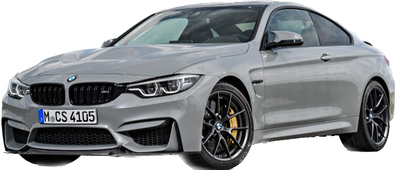

Volkswagen
Porsche
BMW
Volvo
Volkswagen
Porsche
BMW
Volvo
BMW (Bayerische Motoren Werke AG — "Bavārijas Motordarbnīcas") ir Vācijas uzņēmums, kas ražo automobiļus, motociklus, velosipēdus un dzinējus, un ir dibināta 1916. gada 7. martā. BMW galvenā mītne atrodas Minhenē, Bavārijā, Vācijā.
 BMW ir viena no trijām lielākajam Vācijas luksusa automašīnu ražotājām, šajā grupā ietilpst arī Audi un Mercedes-Benz.
BMW automašīnas iedālās sēreijās 1. sērijas modeļi ir vismazākā izmēra uto, 7. sērijas automobīļi vislielākie, vēl ir X sērija, kas ir džipi, tie iedalās tieši tāpat kā sērijas X1 vismāzākais, X7 - vislielākais. I modeļi ir elektroauto. M sērija ir sporta automašīnas, kas ir uzlabotas versijas parastajām. sērijām.
Mans mīļākais BMW modelis ir BMW M4 F82, tas ir redzams bildē starp tekstu, šim auto ir 450 zirgspēki un tas spēj uzņemt 100 kilometrus stundā nieka 4,1 sekundēs.